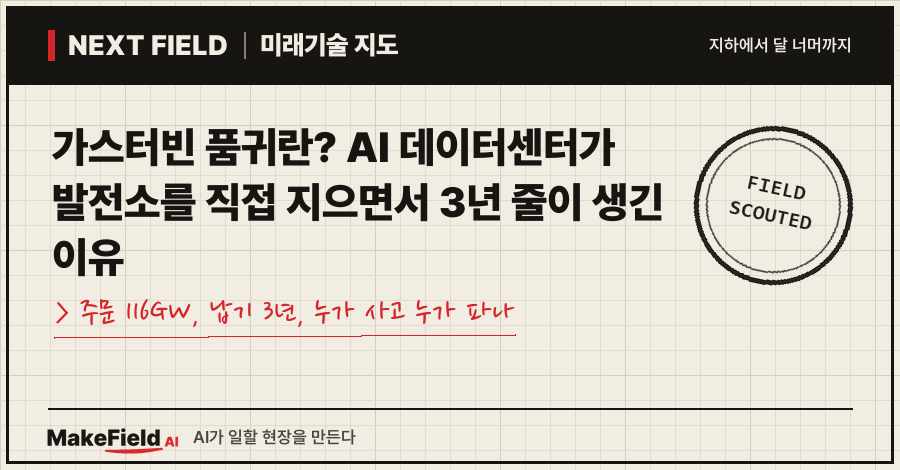
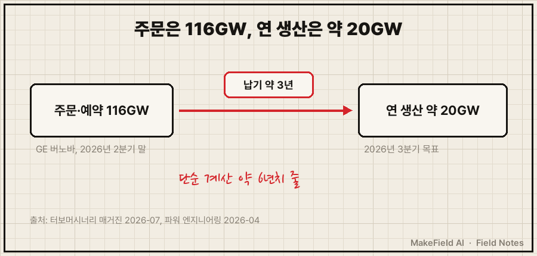
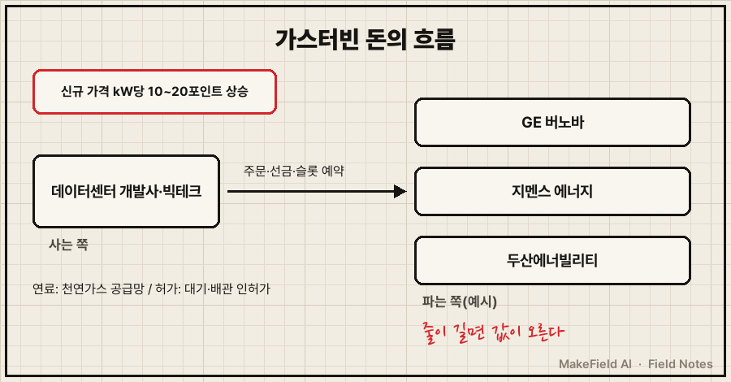
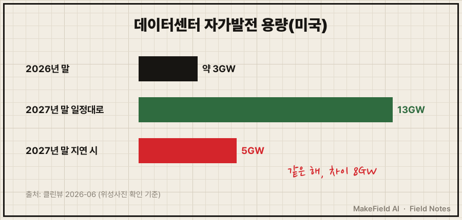

AI 데이터센터가 전기를 못 구하자, 아예 부지 안에 발전소를 짓기 시작했어요. 그러자 이번엔 발전소의 심장인 가스터빈이 모자라졌습니다. 요즘 '가스터빈 품귀'라는 말이 나오는 이유예요.
한 줄 요약: 미국 가스터빈 제조사 GE 버노바의 수주잔고와 생산 예약은 2026년 2분기 말 116GW로 석 달 만에 16GW 늘었고, 새 대형 가스터빈을 주문하면 받기까지 약 3년이 걸린다(터보머시너리 매거진 2026-07, 파워 엔지니어링 2026-04). 경쟁사 지멘스 에너지도 납기가 "3년 이상"이라고 밝혔어요(유틸리티 다이브 2026-08).
이 글은 2026년 11월 기준 공개 자료로 가스터빈이 무엇인지, 왜 데이터센터가 줄을 서는지, 그 돈이 누구에게 흘러가는지 차례로 풀어 봅니다.
1. 가스터빈이란 무엇인가요
가스터빈이란 천연가스를 태운 뜨거운 가스로 날개를 돌려 발전기를 회전시키는 기계다. 비행기 제트엔진과 원리가 같고, 이걸 땅 위에 고정해 전기를 만드는 쪽이 발전용 가스터빈이에요.
💡 가스터빈 — 연료를 태운 고온·고압 가스가 수많은 날개를 밀어 축을 돌리는 회전 기계. '땅에 묶어 둔 제트엔진'이라고 생각하면 쉽다.
데이터센터가 가스터빈을 찾는 이유는 단순해요. 전력망에 연결되기를 몇 년씩 기다리는 대신, 자기 땅에 발전소를 세워 바로 전기를 쓰려는 거예요. 이런 방식을 '비하인드 더 미터'라고 부릅니다.
💡 비하인드 더 미터(BTM, Behind-The-Meter) — 전력망(한전 같은 전력회사)의 계량기를 거치지 않고, 쓰는 곳 안에서 직접 만들어 쓰는 전기. 집 옥상 태양광이 작은 예, 데이터센터 옆 가스발전소가 큰 예다.
💡 GW(기가와트) — 전력 크기 단위. 1GW는 1,000MW이고, 대형 원전 1기가 대략 1GW다.
2. 왜 지금 가스터빈 품귀가 생겼나요
데이터센터의 전기 수요가 전력망 확충 속도를 앞질렀고, 그 빈자리를 메울 현장 발전 수요가 소수 제조사의 생산 능력으로 한꺼번에 몰렸기 때문이다.
수요 쪽부터 보면, 글로벌이코노믹이 전한 모건스탠리 전망은 미국 데이터센터 개발사들이 자가발전·연료전지까지 넣고도 2028년까지 필요한 전력의 34%, 약 32GW를 확보하지 못할 것으로 봤어요(글로벌이코노믹 2026-10, 모건스탠리 보고서 인용). 32GW는 원전 30여 기분 출력입니다(단순 계산).
공급 쪽은 좁아요. 대형 발전용 가스터빈은 몇 안 되는 제조사가 만드는데, 두 회사의 숫자만 봐도 줄이 보입니다.
| 제조사 | 확인된 숫자 | 출처 |
|---|---|---|
| GE 버노바(미국) | 수주잔고+생산 예약 116GW(직전 분기 100GW), 2026년 3분기 연 20GW 생산 체제 목표 | 터보머시너리 매거진 2026-07 |
| GE 버노바 | 새 대형 터빈 납기 약 3년, 2029~2030년 남은 생산 여유 약 10GW | 파워 엔지니어링 2026-04 |
| 지멘스 에너지(독일) | 가스 부문 수주잔고 69GW, 한 분기 신규 수주 15GW, 올해 인도 가능량 15~16GW, 납기 3년 이상 | 유틸리티 다이브 2026-08 |
💡 수주잔고 — 이미 주문을 받았지만 아직 만들어 넘기지 않은 물량. 식당으로 치면 '들어왔는데 아직 안 나간 주문서 더미'다.
💡 슬롯 예약(생산 예약) — 정식 주문 전에 "몇 년도 생산 칸을 내 몫으로 잡아 달라"고 미리 맡겨 두는 약속. GE 버노바의 116GW는 수주잔고 53GW와 슬롯 예약 63GW를 합친 숫자다(터보머시너리 매거진 2026-07).

그림을 글로 정리하면, GE 버노바 한 회사에 걸린 주문·예약(116GW)이 연 생산 목표(약 20GW)의 약 6배예요(단순 계산, 예약분이 모두 주문으로 바뀐다는 가정). 그래서 지금 주문하면 몇 년 뒤 생산 칸을 받는 구조가 됐습니다.
3. 돈의 흐름 — 누가 사고 누가 파나요
사는 쪽은 전력망을 기다릴 수 없는 데이터센터 개발사와 빅테크이고, 파는 쪽은 소수의 가스터빈 제조사이며, 줄이 길어지자 가격도 올랐다.

| 흐름 | 내는 쪽 | 받는 쪽(예시) | 확인된 숫자 |
|---|---|---|---|
| 터빈 주문 | 데이터센터·전력회사 | 가스터빈 제조사 | GE 버노바 계약 물량 100GW 중 약 20%가 데이터센터 직결(파워 엔지니어링 2026-04) |
| 가격 상승 | 신규 주문 고객 | 제조사 | 2026년 상반기 신규 주문 가격이 2025년 4분기보다 kW당 10~20포인트 높음(파워 엔지니어링 2026-04) |
| 장기 가격 | 발전소 건설 비용 | 제조사·공급망 | 우드매켄지는 가스터빈 가격이 2027년 말 kW당 600달러, 2019년의 약 3배에 이를 것으로 전망(파워 엔지니어링 2026-04 인용) |
| 전력 부문 매출 | 전력·데이터센터 고객 | GE 버노바 | 2026년 2분기 전력 부문 수주 167억 달러, 전년 대비 134% 증가(터보머시너리 매거진 2026-07) |
💡 kW당 가격 — 발전 설비 값을 '출력 1kW를 만드는 데 드는 돈'으로 나눈 값. 크기가 다른 설비끼리 값을 비교하는 기준이다.
한국 기업도 이 흐름에 들어갔어요. 두산에너빌리티는 2025년 10월 미국 빅테크와 380MW급 가스터빈 2기 공급 계약을 맺었고(세계일보 2025-10), 2026년 3월에는 미국 기업과 380MW급 7기 계약을 맺어 데이터센터에 2029년 5월부터 매달 1기씩 공급하기로 했어요. 이 계약으로 미국 누적 공급은 12기가 됐습니다(딜사이트 2026-03).
※ 위 기업명과 수치는 산업 구조를 설명하기 위한 예시입니다. 특정 종목의 매수·매도를 권하는 글이 아닙니다.
4. 데이터센터 자가발전은 실제로 얼마나 지어지나요
계획은 크지만 실제로 돌아가는 양은 아직 작다. 미국 전력 데이터 분석 뉴스레터 클린뷰는 위성사진으로 현장을 확인한 결과를 이렇게 정리했어요(클린뷰 2026-06).
| 시점 | 비하인드 더 미터 데이터센터 용량 | 조건 |
|---|---|---|
| 최근 18개월 완공 | 4곳, 합계 2GW | 이미 지어짐 |
| 2026년 말 | 약 3GW | 거의 완공된 6곳 추가 |
| 2027년 말 | 13GW / 지연 시 5GW | 임차인이 정해진 사업이 일정대로 가면 13GW, 지연이 겹치면 5GW까지 낮아짐 |

그림을 글로 옮기면, 같은 2027년 말이라도 일정대로 가면 13GW, 지연되면 5GW로 두 배 넘게 차이가 나요. 이 차이를 가르는 건 터빈만이 아닙니다.
5. 언제 풀리나요, 한계는 무엇인가요
제조사들이 생산을 늘리고 있지만 납기 3년이 단기간에 줄긴 어렵고, 터빈을 구해도 인허가·연료 배관이 또 다른 병목이다.
- 생산은 늘어난다: GE 버노바는 연 생산을 2028년 24GW, 2030년 30GW로 늘릴 계획이에요(터보머시너리 매거진 2026-07). 두산에너빌리티도 2029년부터 매달 1기씩 미국에 보내는 일정을 잡았습니다(딜사이트 2026-03).
- 허가가 발목을 잡는다: 클린뷰는 지연의 주된 원인으로 터빈이 아니라 '허가 문제'를 꼽았어요. 미국 뉴멕시코주에서는 2.45GW 규모 스타게이트 발전소에 가스를 댈 배관이 막혔고, 뉴저지주에서는 400MW 가스발전소의 대기 배출 허가가 늦어지고 있다고 전했습니다(클린뷰 2026-06).
- 가스는 탄소를 낸다: 가스터빈은 석탄보다 덜하지만 이산화탄소를 배출해요. 그래서 지역 대기 허가 심사가 길어지는 구조입니다(추정).
- 수요 전망이 틀릴 수 있다: 34%·32GW 부족 전망은 증권사 추정치이고(글로벌이코노믹 2026-10, 모건스탠리 보고서 인용), AI 투자 속도가 꺾이면 슬롯 예약 일부가 취소될 수 있어요(추정).
- 예약은 주문이 아니다: GE 버노바 116GW 가운데 63GW는 슬롯 예약이라 아직 확정 주문이 아닙니다(터보머시너리 매거진 2026-07).
자주 묻는 질문
Q. 가스터빈 품귀는 언제까지 이어지나요?
공식 종료 시점은 없어요. 다만 GE 버노바는 2029~2030년 생산 여유가 약 10GW만 남았다고 밝혔고(파워 엔지니어링 2026-04), 지멘스 에너지도 납기를 3년 이상으로 봐서(유틸리티 다이브 2026-08) 2020년대 후반까지 빡빡할 가능성이 큽니다(추정).
Q. 데이터센터는 왜 전력망 대신 자가발전을 하나요?
전력망 연결을 기다리는 시간이 너무 길기 때문이에요. 모건스탠리는 미국 데이터센터가 2028년까지 필요한 전력의 34%를 확보하지 못할 것으로 봤습니다(글로벌이코노믹 2026-10, 모건스탠리 보고서 인용).
Q. 한국 기업도 가스터빈을 파나요?
네. 두산에너빌리티가 2025년 10월 미국 빅테크와 380MW급 2기 계약으로 첫 수출을 했고(세계일보 2025-10), 2026년 3월 7기를 추가로 계약해 미국 누적 12기가 됐어요(딜사이트 2026-03).
오늘의 용어 정리
- 가스터빈 — 천연가스를 태워 날개를 돌리고 그 힘으로 발전기를 회전시키는 기계
- 가스터빈 품귀 — 주문이 생산 능력을 크게 넘어 새 터빈을 받기까지 수년을 기다려야 하는 상태
- 비하인드 더 미터(BTM) — 전력망을 거치지 않고 쓰는 곳 안에서 직접 만들어 쓰는 전기
- GW / MW — 전력 크기 단위(1GW=1,000MW, 대형 원전 1기 약 1GW)
- 수주잔고 — 주문받았지만 아직 넘기지 않은 물량
- 슬롯 예약 — 정식 주문 전에 미래 생산 칸을 미리 잡아 두는 약속
- kW당 가격 — 출력 1kW를 만드는 데 드는 설비 값
지난 Next Field에서 전력망에 연결해도 되는지 심사하는 '전력계통영향평가'의 좁은 문을 봤다면, 오늘은 그 문을 피해 직접 발전소를 짓는 쪽의 병목을 따라가 봤어요. 터빈 생산 증설과 인허가 속도 중 어느 쪽이 먼저 이 줄을 줄일까요?
출처
[1] 터보머시너리 매거진(2026-07) — GE 버노바 2026년 2분기: 수주잔고+슬롯 예약 116GW(직전 분기 100GW, 슬롯 예약 63GW·잔고 53GW), 전력 부문 수주 167억 달러·134% 증가, 2026년 3분기 연 20GW 생산, 2028년 24GW·2030년 30GW 목표
→ https://www.turbomachinerymag.com/view/ge-vernova-gas-turbine-backlog-hits-116-gw-as-power-orders-more-than-double
[2] 파워 엔지니어링(2026-04) — GE 버노바 2026년 1분기: 계약 물량 83→100GW 중 약 20% 데이터센터 직결, 신규 주문 가격 kW당 10~20포인트 상승, 대형 터빈 납기 약 3년, 2029~2030년 남은 여유 약 10GW, 우드매켄지 2027년 말 kW당 600달러 전망
→ https://www.power-eng.com/gas/turbines/data-centers-drive-record-surge-in-ge-vernova-power-equipment-orders-as-turbine-slots-tighten-through-2030/
[3] 유틸리티 다이브(2026-08) — 지멘스 에너지 가스 부문 수주잔고 69GW, 분기 신규 수주 15GW, 올해 인도 가능 15~16GW, 납기 3년 이상
→ https://www.utilitydive.com/news/siemens-gas-turbine-backlog-nears-70-gw-as-company-expands-manufacturing/827390/
[4] 글로벌이코노믹(2026-10) — 모건스탠리 전망 인용: 미국 데이터센터가 자가발전·연료전지를 반영하고도 2028년까지 필요 전력의 34%, 약 32GW 부족
→ https://www.g-enews.com/article/ICT/2026/10/2026100609490663653d7a510102_1
[5] 클린뷰(2026-06) — 미국 비하인드 더 미터 데이터센터: 최근 18개월 4곳 2GW 완공, 2026년 말 약 3GW, 2027년 말 13GW(지연 시 5GW), 뉴멕시코 배관·뉴저지 대기 허가 지연 사례
→ https://newsletter.cleanview.co/p/data-center-developers-want-to-build
[6] 세계일보(2025-10) — 두산에너빌리티, 미국 빅테크와 380MW급 가스터빈 2기 공급 계약(2026년 말까지 공급)
→ https://www.segye.com/newsView/20251013514636
[7] 딜사이트(2026-03) — 두산에너빌리티, 미국 기업과 380MW급 가스터빈 7기 계약, 2029년 5월부터 매달 1기 데이터센터 공급, 미국 누적 12기
→ https://dealsite.co.kr/articles/158014